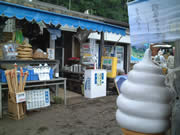
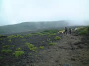
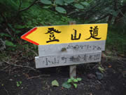
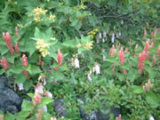
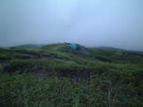
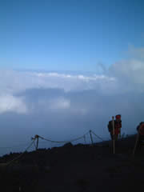
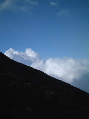
やる気の無い右寄り会社と排他的な社員からの逃避。
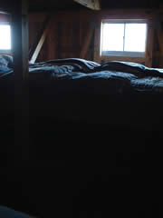
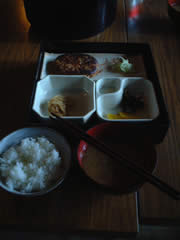
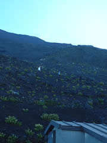
理由は樹林帯を通る景観の良さと、頂上まで登らなくてもご来光を拝めるとゆーとこ。単独登山だったので、初手から道間違えて、下山道を逆流。1Ｋｍ登って、下山客に指摘される…もーいっそこのまま登ってやろうかと暴挙の道を考えたものの道徳的親子に「この先は砂地で険しいですヨ〜。登れまセンヨ〜」と諭され引き返す。
樹林帯をぬけ砂と石・岩が続く登山道を登ってのぼって山小屋に。太陽館。
夕食はハンバーグ。申し訳程度の切干だいこんの煮物、天使の分け前的キャベツのせんぎり。たっぷりの白米に豚汁。
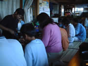

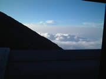
「…ひそひそひそ…狭〜い…ひそひそ」「もっとこっち来れば？…ひそひそひそ…」
「…むふ…」「…うふ…」
なんだかいやーな静寂…背中に緊張。目が冴えてしまって山小屋から抜け出すとみな口をぽっかりあけて空を見上げてる。星だらけ。夜のしじまに音が響くような星のまたたき。運よく流星群が来ていたものだから、流れ星落ちるたびに歓声が上がる。こんなに星をみたのははじめてで、これが本当の夜空とは思えずに奇妙な浮遊感で怖くなる。
闇と満天の星。いにしえの人々が信仰、精霊を大切にした気持ちが良くわかる。
造れないものがそこにはあって、それには畏怖があり慈愛に満ちている。
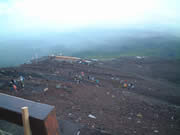
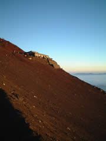
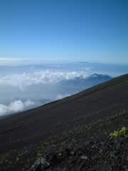
ケータイはバリ3会社に退職メール。雲海に漕ぎ出て下山。
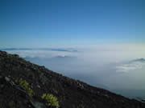
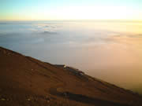
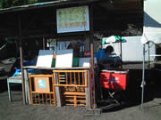